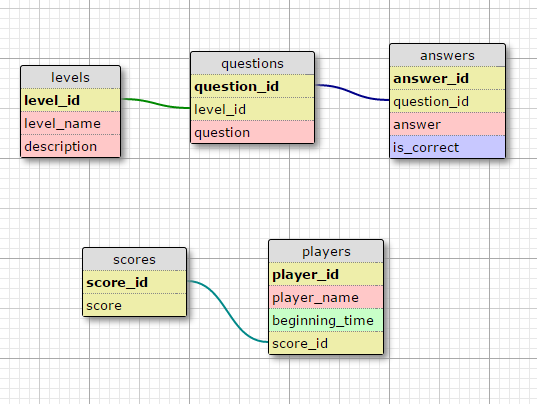

CodeCamp PostgreSQL: Đặng Đức Vinh + Nguyễn Trung Tuyến
Đề bài: Thiết kế cơ sở dữ liệu cho ứng dụng game Ai là triệu phú.
Chú ý: Các lệnh truy vấn yêu cầu chỉ sử dụng 1 lệnh để lấy được kết quả theo yêu cầu. Yêu cầu bài toán: • 1. Mỗi câu hỏi có 4 đáp án và chỉ có 1 đáp án đúng. Giới hạn độ dài câu hỏi là 150 ký tự, độ dài đáp án là 50 ký tự. o 1.1 Nhập dữ liệu cho 100 câu hỏi: 20đ o 1.2. Truy vấn 1 câu hỏi bất kỳ và lấy ra được nội dung câu hỏi, 4 đáp án, đáp án đúng: 5đ o 1.3. Truy vấn 1 câu hỏi bất kỳ và lấy ra được nội dung câu hỏi, 4 đáp án, đáp án đúng với dữ liệu với nội dữ liệu không trùng nhau (Sử dụng JSON): 5đ • 2. Có vấn đề mới phát sinh là có phân loại câu hỏi theo 3 mức: Dễ, Trung bình, Khó. o 2.1. Hãy cập nhật thông tin bảng với yêu cầu mới thêm (Các bảng trước đó đã có và có dữ liệu): 5đ o 2.2. Truy vấn số lượng câu hỏi theo mỗi mức độ khó để kiểm tra số lượng câu hỏi cho mỗi mức độ khó đã bằng nhau chưa: 5đ o 2.3. Truy vấn lấy ngẫu nhiên được 1 câu hỏi thuộc mức độ Dễ (Trung bình, Khó): 5đ o 2.4. Truy vấn lấy ra ngẫu nhiên 15 câu hỏi và sắp xếp theo thứ tự độ khó tăng dần (mỗi độ khó có 5 câu hỏi sử dụng UNION): 10đ • 3. Lưu được thông tin cấu hình cho game: Số tiền đạt được ứng với số câu hỏi trả lời được (Ví dụ: trả lời được 1 câu được 500k, 2 câu được 800k, …). o 3.1. Nhập dữ liệu cấu hình cho game (15 mốc câu hỏi như Ai là triệu phú): 5đ • 4. Giả lập trợ giúp người chơi (50-50, trợ giúp từ khán giả, gọi điện cho người thân). o 4.1. Truy vấn lấy được ngẫu nhiên 2 trong số 4 đáp án của 1 câu hỏi bất kỳ, trong đó bắt buộc phải chứa đáp án đúng: 5đ o 4.2. Truy vấn ngẫu nhiên tỉ lệ khán giả chọn đáp án của 1 câu hỏi theo % (Ví dụ: Đáp án A – 20%, B – 30%, C – 40%, D – 10%): 5đ o 4.3. Truy vấn ngẫu nhiên đáp án cho 1 câu hỏi: 5đ (Câu hỏi gọi trợ giúp người thân) • 5. Lưu thông tin người chơi bao gồm: Họ tên, Thời điểm chơi, Số tiền đạt được. o 5.1. Nhập dữ liệu mẫu 100 người chơi: 5đ o 5.2. Truy vấn lấy ra 10 người chơi đạt điểm cao nhất, sắp xếp theo thứ tự điểm cao giảm dần (nếu 2 người chơi có cùng điểm số thì người chơi sau sẽ được xếp ở vị trí cao hơn): 5đ • 6. Quản lý game cần thực hiện các chức năng quản lý: o 6.1. Tìm kiếm câu hỏi theo id, theo từ khóa trong câu hỏi, theo từ khóa trong câu trả lời. Viết 2 lệnh truy vấn tìm kiếm theo từng cột và theo cả (id, từ khóa trong câu hỏi, từ khóa trong câu trả lời): 5đ o 6.2. Cập nhật nội dung một câu hỏi, cập nhật nội dung câu trả lời: 5đ o 6.3. Xóa một câu hỏi: 5đ
mkdocs new [dir-name]- Create a new project.mkdocs serve- Start the live-reloading docs server.mkdocs build- Build the documentation site.mkdocs help- Print this help message.
Ý tưởng: Thiết lập 5 bảng bao gồm các bảng:
- levels: Lưu trữ cấp độ của các câu hỏi;
- questions: Lưu trữ nội dung các câu hỏi;
- answers: Lưu trữ đáp án của các câu hỏi;
- scores: Lưu trữ mức điểm (tiền thưởng) tương ứng với số câu đạt được dựa trên id;
- players: Lưu trữ thông tin người chơi.
Các câu lệnh tạo bảng:
Cấu trúc bảng:

Lệnh tạo bảng
- Bảng levels
create table levels (
level_id serial NOT NULL,
name character varying(30) NOT NULL,
description text,
CONSTRAINT levels_pkey PRIMARY KEY (level_id)
)
- Bảng questions
create table questions (
question_id serial NOT NULL,
level_id integer NOT NULL,
question character varying(150) NOT NULL,
CONSTRAINT questions_pkey PRIMARY KEY (question_id),
CONSTRAINT questions_level_fkey FOREIGN KEY (level_id) REFERENCES levels (level_id),
description text
)
- Bảng answers
create table answers (
answer_id serial NOT NULL,
question_id integer NOT NULL,
answer character varying(50) NOT NULL,
is_correct boolean DEFAULT FALSE,
CONSTRAINT answers_pkey PRIMARY KEY (answer_id),
CONSTRAINT answers_question_fkey FOREIGN KEY (question_id) REFERENCES questions (question_id),
description text
)
- Bảng scores
create table scores (
score_id serial NOT NULL,
score integer NOT NULL,
CONSTRAINT scores_pkey PRIMARY KEY (score_id),
CHECK ( score > 0 )
- Bảng players
create table players (
player_id serial NOT NULL,
score_id integer,
player_name character varying(100) NOT NULL,
beginning_time timestamp NOT NULL,
CONSTRAINT players_pkey PRIMARY KEY (player_id),
CONSTRAINT players_score_fkey FOREIGN KEY (score_id) REFERENCES scores (score_id)
)
Các lệnh truy vấn:
1. Mỗi câu hỏi có 4 đáp án và chỉ có 1 đáp án đúng. Giới hạn độ dài câu hỏi là 150 ký tự, độ dài đáp án là 50 ký tự.
1.1 Nhập dữ liệu cho 100 câu hỏi: 20đ
1.2. Truy vấn 1 câu hỏi bất kỳ và lấy ra được nội dung câu hỏi, 4 đáp án, đáp án đúng: 5đ
select q.question_id, q.question, a.answer, a.is_correct
from questions as q join answers as a on q.question_id = a.question_id
where q.question_id = (select trunc(random() * ( select count(question_id) from questions) + 1))
2. Có vấn đề mới phát sinh là có phân loại câu hỏi theo 3 mức: Dễ, Trung bình, Khó.
2.2 Truy vấn số lượng câu hỏi theo mỗi mức độ khó để kiểm tra số lượng câu hỏi cho mỗi mức độ khó đã bằng nhau chưa: 5đ
CREATE OR REPLACE FUNCTION checking_for_balance() RETURNS void AS
$BODY$
DECLARE
x int; y int; z int; level_count int;
BEGIN
level_count = (select count(level_id) from levels);
x = (select count(level_id) from questions where level_id = 1);
FOR i in 2..level_count LOOP
y = (select count(level_id) from questions where level_id = i);
IF x != y THEN
RAISE EXCEPTION 'So luong cau hoi giua cac level khong bang nhau';
END IF;
END LOOP;
END;
$BODY$
LANGUAGE plpgsql;
select checking_for_balance();
2.3 Truy vấn lấy ngẫu nhiên được 1 câu hỏi thuộc mức độ Dễ (Trung bình, Khó): 5đ
select *
from questions
where level_id = (select trunc(random() * ( select count(level_id) from levels) + 1)) limit 1
2.4 Truy vấn lấy ra ngẫu nhiên 15 câu hỏi và sắp xếp theo thứ tự độ khó tăng dần (mỗi độ khó có 5 câu hỏi sử dụng UNION): 10đ
CREATE OR REPLACE FUNCTION random_fifteen_question_and_sort()
RETURNS TABLE(question_id integer, level_id integer, question character varying(150))
AS $$
DECLARE
BEGIN
RETURN QUERY
select c.question_id, c.level_id, c.question
from
( select b.question_id, b.level_id, b.question
from
( select questions.question_id, questions.level_id, questions.question
from questions
where questions.level_id = 1
UNION
select questions.question_id, questions.level_id, questions.question
from questions
where questions.level_id = 2
UNION
select questions.question_id, questions.level_id, questions.question
from questions
where questions.level_id = 3 ) as b
order by RANDOM()
limit 15 ) as c
order by c.level_id ASC;
END;
$$
LANGUAGE plpgsql;
select * from random_fifteen_question_and_sort();
3. Lưu được thông tin cấu hình cho game: Số tiền đạt được ứng với số câu hỏi trả lời được (Ví dụ: trả lời được 1 câu được 500k, 2 câu được 800k, …)
3.1 Nhập dữ liệu cấu hình cho game (15 mốc câu hỏi như Ai là triệu phú): 5đ
insert into scores (score) values (500000), (800000), (1500000), (2500000), (4000000), (6000000), (9000000), (12000000), (16000000), (20000000), (25000000), (32000000), (45000000), (70000000), (100000000)
select * from scores
4. Giả lập trợ giúp người chơi (50-50, trợ giúp từ khán giả, gọi điện cho người thân)
4.1 Truy vấn lấy được ngẫu nhiên 2 trong số 4 đáp án của 1 câu hỏi bất kỳ, trong đó bắt buộc phải chứa đáp án đúng: 5đ
CREATE OR REPLACE FUNCTION random_two_answer_with_a_correct_answer(question_index integer)
RETURNS TABLE(answer_id integer, question_id integer, answer character varying(50), is_correct boolean)
AS $$
DECLARE
BEGIN
RETURN QUERY
select answers.answer_id, answers.question_id, answers.answer, answers.is_correct
from answers where (answers.is_correct = TRUE and answers.question_id = $1)
or (answers.is_correct = FALSE and answers.answer_id = (select trunc(random() * 4 + ( select min(answers.answer_id) from answers where answers.question_id = $1))))
order by answers.is_correct DESC
limit 2;
END;
$$
LANGUAGE plpgsql;
select * from random_two_answer_with_a_correct_answer(2)
4.2 Truy vấn ngẫu nhiên tỉ lệ khán giả chọn đáp án của 1 câu hỏi theo % (Ví dụ: Đáp án A – 20%, B – 30%, C – 40%, D – 10%): 5đ
CREATE OR REPLACE FUNCTION random_rating_answers()
RETURNS table (m integer, n integer, p integer integer)
AS $$
DECLARE
a integer;b integer;c integer;d integer;
BEGIN
d = 100;
a = round(random() * d);
d = d - a;
b = round(random() * d);
d = d - b;
c = round(random() * d);
d = d - c;
RETURN QUERY
select a,b,c,d;
END;
$$
LANGUAGE plpgsql;
select * from random_rating_answers()
4.3 Truy vấn ngẫu nhiên đáp án cho 1 câu hỏi: 5đ (Câu hỏi gọi trợ giúp người thân)
CREATE OR REPLACE FUNCTION random_answer_for_a_question(question_index integer)
RETURNS TABLE(answer_id integer, question_id integer, answer character varying(50), is_correct boolean)
AS $$
DECLARE
BEGIN
RETURN QUERY
select answers.answer_id, answers.question_id, answers.answer, answers.is_correct
from answers
where answers.answer_id = (select trunc(random() *4 + ( select min(answers.answer_id) from answers where answers.question_id = $1)));
END;
$$
LANGUAGE plpgsql;
select * from random_answer_for_a_question(2)
5. Lưu thông tin người chơi bao gồm: Họ tên, Thời điểm chơi, Số tiền đạt được.
5.1 Nhập dữ liệu mẫu 100 người chơi: 5đ
CREATE OR REPLACE FUNCTION before_add_a_player() RETURNS TRIGGER
LANGUAGE plpgsql
AS $$
BEGIN
NEW.beginning_time = (select now());
return NEW;
END
$$;
CREATE TRIGGER trigger_add_beginning_time_before_insert_player
BEFORE INSERT ON players
FOR EACH ROW
EXECUTE PROCEDURE before_add_a_player();
CREATE OR REPLACE FUNCTION random_players(max INTEGER) RETURNS void AS
$BODY$
DECLARE
i int; name character varying(10); random_score_id int;
BEGIN
name = 'player';
FOR i in 1..$1 LOOP
random_score_id = (select trunc(random() * ( select count(score_id) from scores) + 1));
insert into players(player_name, score_id) values (CONCAT(name,i), random_score_id);
END LOOP;
END;
$BODY$
LANGUAGE plpgsql;
select random_players(100);
5.2 Truy vấn lấy ra 10 người chơi đạt điểm cao nhất, sắp xếp theo thứ tự điểm cao giảm dần (nếu 2 người chơi có cùng điểm số thì người chơi sau sẽ được xếp ở vị trí cao hơn): 5đ
select * from players
order by score_id DESC, beginning_time DESC
limit 10
6. Quản lý game cần thực hiện các chức năng quản lý:
6.1 Tìm kiếm câu hỏi theo id, theo từ khóa trong câu hỏi, theo từ khóa trong câu trả lời:
select * from questions where question_id = 3
select * from questions where question LIKE '%uo%'
6.2 Cập nhật nội dung một câu hỏi, cập nhật nội dung câu trả lời: 5đ
update questions
set question = 'Nuoc nao co dien tich nho nhat the gioi?'
where question_id = 1
update answers
set answer = 'Nuoc My'
where answer_id = 1 and question_id = 1
6.3 Xóa một câu hỏi: 5đ
CREATE OR REPLACE FUNCTION before_remove_a_question() RETURNS TRIGGER
LANGUAGE plpgsql
AS $$
BEGIN
delete from answers where question_id = OLD.question_id;
return OLD;
END
$$;
CREATE TRIGGER trigger_delete_answers_before_delete_question
BEFORE DELETE ON questions
FOR EACH ROW
EXECUTE PROCEDURE before_remove_a_question();
delete from questions where question_id = 4
-- Lệnh chèn dữ liệu mẫu -- Lệnh truy vấn dữ liệu mẫu -- Các lệnh query phức tạp